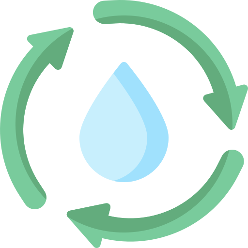

<section class="section1">
    <div class="cuestion-flex">
        
        <div class="text-flex">
            <p class="cuestion">¿Que es reciclar?</p>
            <p class="cuestion-text">El proceso de reciclaje es una actividad que ayuda a solucionar <br> los problemas ocasionados por los millones de toneladas de <br> desechos sólidos, que producimos a diario los seres humanos <br> en todo el mundo. <br><br> Reciclar supone contribuir a proteger el medioambiente para <br> detener la contamincion ambiental.</p>
            <div class="flex-img">
                
                
                
            </div>
        </div>
    </div>
</section>
